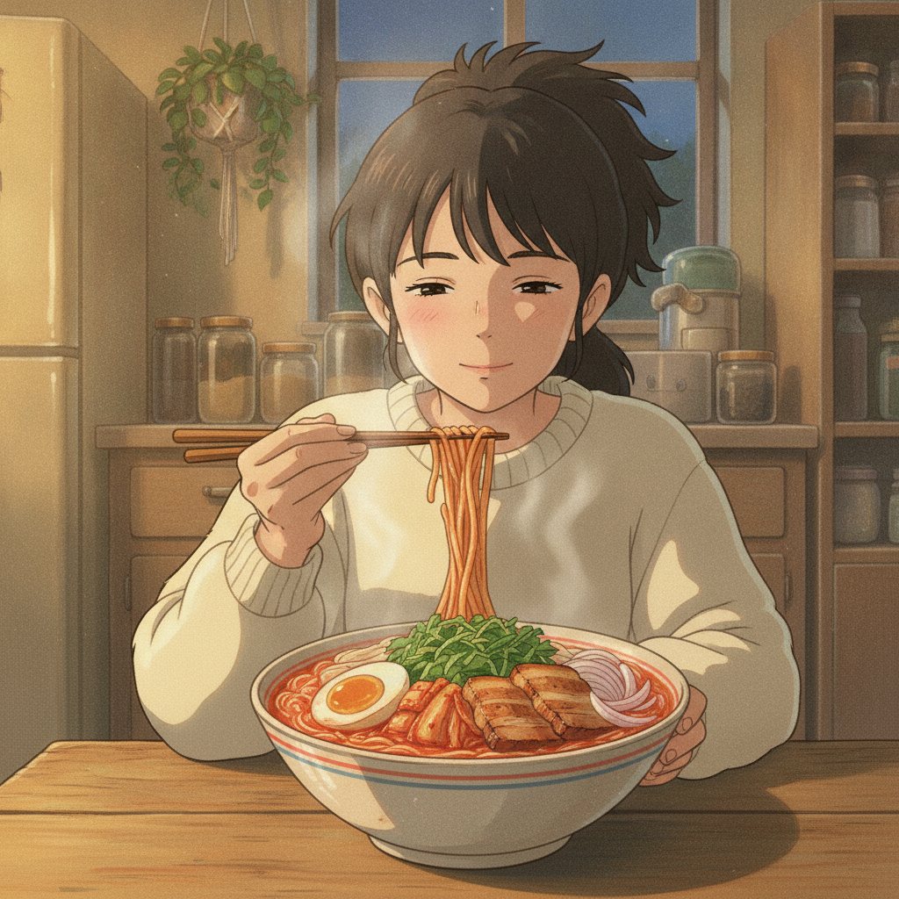

삼겹 김치 쌀국수
냄비 하나로 끝나는 야식. 냉장고에 있는 삼겹살 세 줄과 김치면 국물까지 나온다.
재료
- 쌀국수100g마른 면 그대로 (미리 불릴 필요 없음)
- 삼겹살100g한 입 크기로 썰기 (3~4줄)
- 김치1컵잘 익은 것으로, 2cm 폭으로 썰기
- 김치 국물2큰술국물 간의 핵심이라 꼭 챙길 것
- 양파1/4개굵게 채 썰기
- 마늘2쪽편으로 썰기
- 달걀1개반숙으로 삶거나 프라이
- 깻잎3장돌돌 말아 채 썰기
- 물500ml
- 상추2장(선택) 깻잎 대신 올려도 된다
국물 간
| 재료 | 분량 |
|---|---|
| 김치 국물 | 2큰술 |
| 고춧가루 | 1작은술 |
| 소금 | 1/3작은술 |
| 참기름 (마무리) | 1작은술 |
| 깨소금 (마무리) | 1/2작은술 |
만드는 법
-
재료 손질2분양파와 마늘을 썰고, 김치는 2cm 폭으로, 삼겹살은 한 입 크기로 썬다. 깻잎은 마지막에 올릴 것이니 채 썰어 따로 둔다.
-
삼겹살 굽기4분기름 없이 달군 냄비에 삼겹살을 넣고 센 불에서 겉이 노릇해질 때까지 굽는다. 나온 기름은 버리지 말고 그대로 둔다.
삼겹살 기름이 이 국물의 육수 역할을 한다. 따로 육수를 낼 시간을 여기서 번다.
-
김치·양파 볶기3분같은 냄비에 김치, 양파, 마늘을 넣고 중불에서 볶는다. 김치 가장자리가 투명해지고 신 냄새가 고소하게 바뀌면 된다.
김치를 물에 바로 넣으면 신맛만 남는다. 기름에 먼저 볶아야 단맛이 올라온다.
-
국물 끓이기3분물 500ml, 김치 국물 2큰술, 고춧가루 1작은술을 넣고 센 불로 끓인다. 끓어오르면 소금으로 간을 맞춘다.
-
면 삶기2분끓는 국물에 마른 쌀국수를 그대로 넣고 2분간 삶는다. 젓가락으로 한 번 풀어준다.
쌀국수는 불에서 내린 뒤에도 국물 열로 계속 익는다. 살짝 덜 익었다 싶을 때 불을 끄는 게 맞다.
-
담기1분그릇에 옮기고 반숙 달걀을 반으로 갈라 올린다. 채 썬 깻잎을 얹고 참기름 1작은술, 깨소금 1/2작은술을 뿌린다.
곁들이면 좋은 것
- 치즈 1장 — 면 위에 올려 국물 열로 녹이면 매운맛이 눌리고 부드러워진다.
- 사과 몇 조각 — 느끼함을 끊어줘서 야식 뒤 입이 개운하다.
- 만두 2~3개 — 4번 단계에서 국물에 같이 넣으면 한 그릇이 든든해진다.
팁
- 대체 재료 — 쌀국수가 없으면 소면(국수)으로. 대신 밀가루 면은 국물이 탁해지니 따로 삶아 헹군 뒤 넣는다. 삼겹살 대신 프랭크소세지를 어슷 썰어 써도 된다.
- 맛 조절 — 너무 시면 물을 50ml 더 넣고 소금으로 다시 잡는다. 반대로 밍밍하면 김치 국물을 1큰술씩 더한다. 고춧가루는 처음부터 다 넣지 말고 마지막에 맛을 보며 더하는 게 안전하다.
- 밤에 부담될 때 — 삼겹살을 50g으로 줄이고 물을 600ml로 늘리면 훨씬 가벼워진다.
- 면이 불었다면 — 다음 날 남은 국물은 면을 건져내고 밥을 말아 먹는 쪽이 낫다. 쌀국수는 재가열하면 끊어진다.